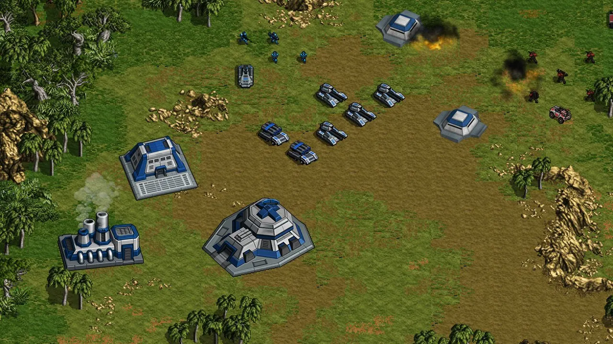
方舟库的门，
是谁打开的？
2038 年，饱经战火的各国组建全球联盟，把所有重型军备封存进「方舟库」。二十年后，叛乱几乎同时在世界各地爆发，而叛军手里握着的，正是本该封存的武器。
联盟主力被派往中东。而在南美洲，秘鲁东部的普卡尔帕城附近也发现了叛军的踪迹。将军，你的任务是平息叛乱，抓捕叛军首领米盖尔。
解放秘鲁 · 七场战斗
从亚马孙低地沿乌卡亚利河向西，翻越安第斯山，阻止叛军抵达利马和卡亚俄港。泥泞、沼泽与河滩限制着重型装备，而这里没有卫星支援。
司令部拒绝提供卫星侦察，侦察组进城遭伏击撤回，敌军尾随而至。
雨后的河岸变成沼泽，只能主动出击，摧毁叛军的补给中心。
兵分两路，罗杰斯率步兵小队执行斩首，沼泽里用不了重型装备。
抢在叛军前面卡住通往利马的捷径，残缺的通讯里提到“雷区”和“哨兵”。
叛军从南面绕到瓦努科两路夹击，罗杰斯搭直升机赶到前线。
峡谷道路被封锁、布满地雷，远征军首次启用多火箭炮。
叛军集结全部残余兵力死守，远征军在标记地点遭四面埋伏。
指挥部的人们
关卡之间，通过通讯对白推进剧情。每个人都知道一点，没有人知道全部。
断裂年代的老兵，和平年代在月面工程兵团服役。比参议院更早意识到局势有多严重。
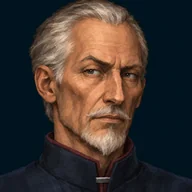
海因里希·塞勒在司令部为你争取卫星和援军，也受制于政治压力。他知道的比说出来的多。
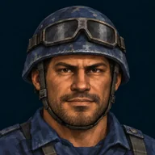
史提夫·罗杰斯承担侦察、斩首和突袭任务，和将军之间是过命的战友情。
所有通讯的入口，也是战场的“旁白”。冷静、简洁，偶尔流露情绪。
19 种单位，15 种建筑
从步兵、狙击手到 T-22 宙斯和多火箭发射系统。修建发电设施、兵营和工厂，研究 48 项科技，用城墙和炮塔守住阵地。
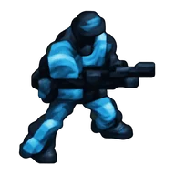
步兵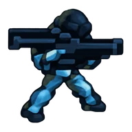
掷弹兵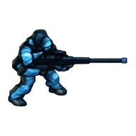
狙击手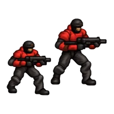
突击兵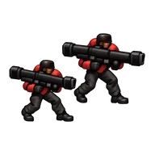
导弹兵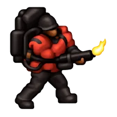
喷火兵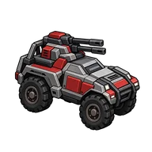
土狼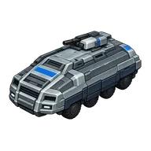
AV-40 堡垒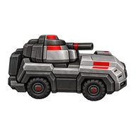
犰狳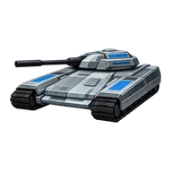
T-21 重锤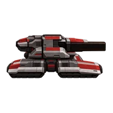
犀牛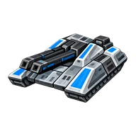
T-22 宙斯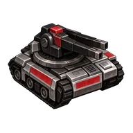
豪猪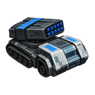
多火箭发射系统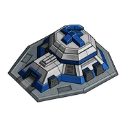
指挥中心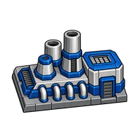
发电机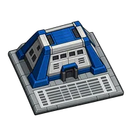
步兵中心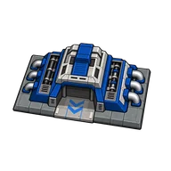
机械厂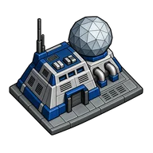
技术中心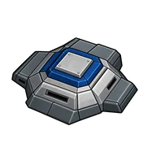
掩蔽壕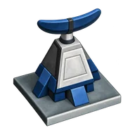
定位器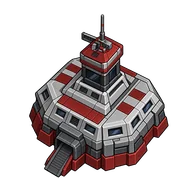
总部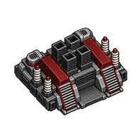
发电厂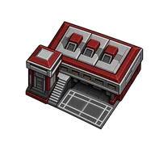
兵营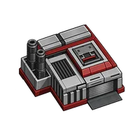
工厂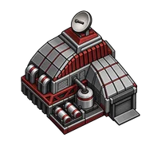
实验室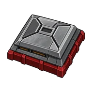
掩蔽壕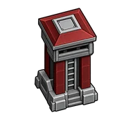
塔熟悉的即时战略，
顺手的现代操作
建造基地、生产部队、编队推进。六种地形影响行军与作战，雷达会提示受袭位置，指挥中心一键定位。
为了让每一局都值得
全球战局
在地球上选择战区，再进入战区内的关卡。地球会随进度点亮，悬停存档时自动转到作战地点。
军衔与战绩
每局结束都有战报和统计图表，战功累积晋升军衔，从少校一路升到上将。
随时存档
战役与自定义各有 3 个手动存档位和 1 个自动存档位，存档卡片带战场缩略图和作战时长。
双难度
普通与困难两档。想放松就普通，想证明自己就困难。
高分辨率适配
UI 与战场随窗口等比例缩放，Mac Retina 与全屏下都清晰锐利。
操作指南
内置图文指南，单位、建筑与操作都讲得明明白白。
支持平台
- 下载解压后直接运行
- 支持 Retina、全屏与触控板捏合缩放
- 64 位 Windows
- 解压后运行 exe，同目录的 pck 文件需一起保留
常见问题
需要联网或注册账号吗？
不需要。《战争艺术》是单机离线游戏，不需要登录，也不会联网。
有内购或广告吗？
没有。游戏里没有任何内购、广告或第三方统计。
存档保存在哪里？
存档、进度和设置都保存在你电脑本地的游戏数据目录里，不会上传。
后面还会有新战区吗？
第一战区「解放秘鲁」之后，后续战区正在规划中，故事会一路追查到方舟库背后的真相。
使用中遇到问题或有建议？发邮件到 liaotao.studio@gmail.com，我们会尽快回复。